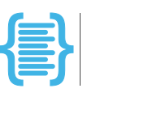

Boilerplate
Boilerplate pairs a Python development environment, one tool for each job, with templates that build on one another to stamp out projects. Use its templates as they are, or put your own standards on top of one instead of forking it. It renders each template with Copier, a tool for project templates, and you don't need to know Copier to use it.
Boilerplate takes care of the setup chores around writing code, the kind developers call yak shaving: a working toolchain and a configured project. You start at the work.
Each pick is the most modern and lightweight option for its job: uv for installing Python and managing dependencies, Ruff for linting and formatting, Pyright in strict mode for type checking, pytest for testing and VS Code as the editor. The templates configure them in pyproject.toml and .vscode/, so the editor and the command line format code the same way.
Less yak. More stack.
The Quickstart shows the same steps in text.
Quickstart Browse Templates Hub
Coming from Copier?
Start with Why Boilerplate? for the pitch, or go straight to Template Composition for the extends mechanics.
Already on uv?
uv init gives you a package; Boilerplate gives you the judgment around it.
Evaluating Boilerplate?
Why Boilerplate? covers the ethos and the environment; Implementation Status shows what is implemented.
Why choose Boilerplate?
-
Instant productivity
Scaffold fully configured projects with one command.
-
Locked dependencies
uv.lockpins the environment, so every machine resolves the same. -
Toolchain
uv,ruff, andpytestarrive preconfigured and ready to go, plus a strictpyrightconfiguration checked live via Pylance. -
Cross-platform
Windows 11 installs are automated; Linux/WSL2 and macOS follow the same steps manually.
-
Minimal configuration
Defaults from the first render, so there is less setup before you write code.
-
Layer templates with
extends— one command, one merged question set, deterministic precedence when layers overlap.
Planned
boilerplate update — a three-way merge that consumes the lock boilerplate new writes to move a generated project to a newer template version — is planned. See the roadmap for sequencing, the update model design for the approach, and Implementation Status for what exists today.
Mini quickstart
Then run uv run pytest inside my-first-project. The Quickstart walks every step with expected output, and Installation covers manual setup.
Explore further
-
Scaffold, install, and run your first project.
-
Commands, options, and examples.
-
Manual setup for Linux, WSL2, and macOS.
-
Explore available templates and where to start.
-
Set up the recommended editor experience.
-
See how the tools fit together.
-
Developer platform architecture
The reference model and standards.
-
Development setup and coding standards; see also the Security policy.
-
Answers to common questions and fixes for common setup issues.
